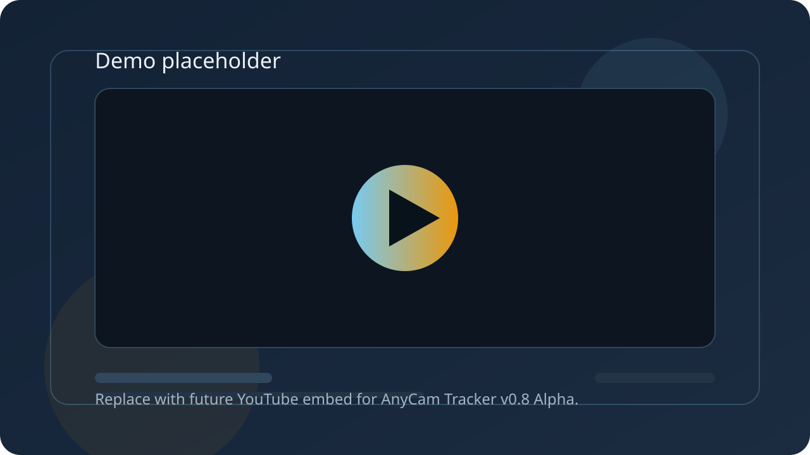

Autoencuadre digital
Mantiene el sujeto mejor en cuadro sin mover fisicamente la camara.
Pagina alfa
Convierte una camara normal en una camara inteligente por software.
Autoencuadre digital, zoom por gestos y control local para creadores, profesores, streamers y pequenos estudios.

Demo
Demo proximamente. Este bloque se sustituira por el video publico de YouTube cuando este listo.
Funciones
Mantiene el sujeto mejor en cuadro sin mover fisicamente la camara.
Ajustes de encuadre y aproximacion desde interacciones pensadas para control local.
La experiencia esta pensada para operarse cerca del equipo, sin depender de una nube.
Ruta actual validada para fuentes de video de red en la alfa.
Integracion prevista alrededor de flujos de captura de ventana para creadores y estudios pequenos.
El seguimiento se apoya en encuadre digital, no en movimiento mecanico del dispositivo.
Edicion Founder
50 €
Pago unico. Licencia de por vida. Sin suscripcion.
Uso personal, profesional, educativo, comercial y creacion de contenido permitido.
Redistribucion, reventa, sublicencia, bundle, OEM, SaaS o marca blanca requieren acuerdo previo por escrito.
Compatibilidad
Hoja de ruta
FAQ
No. AnyCam Tracker es una app independiente. Puede usar streams RTSP, fuentes locales o fuentes compatibles, pero Sentinel no es obligatorio.
No. AnyCam usa encuadre digital, recorte y zoom por software. No mueve motores ni hace PTZ fisico.
Si. Puedes usar AnyCam para crear, grabar, emitir y monetizar contenido propio.
La Edicion Founder es de pago unico y licencia de por vida. No tiene renovacion anual.
No sin acuerdo previo por escrito. La redistribucion, reventa, sublicencia, bundle, OEM, SaaS o marca blanca requieren autorizacion expresa.
No. Esta es una version alfa.